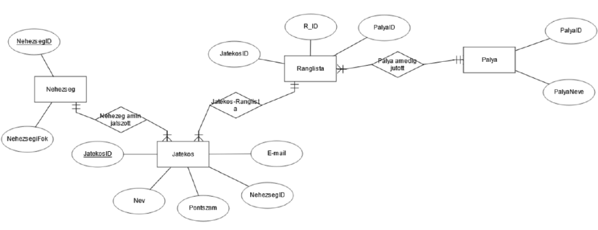
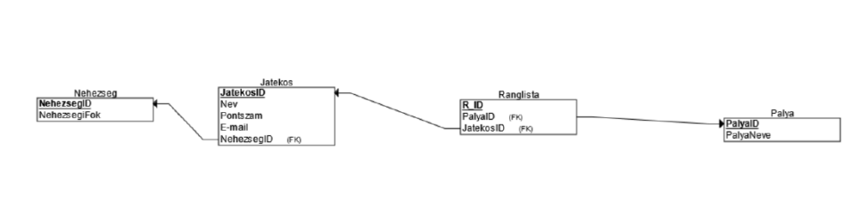

Csoport neve: JumpOrDie
Feladat: JumpOrDie
Rendszertervezés
Gyakorlatvezető::
Dr. Mileff Péter
Csoport tagok:
|
Bán Tamás József |
QTMKZZ |
bantamas18@gmail.com |
|
Szepesi Glória Virág |
W0E0RY |
szgvirag54@gmail.com |
|
Sindely Richárd |
P1UV07 |
rsindely@gmail.com |
|
Bezdán Nándor |
FG6XJF |
nandorka.bezdan@gmail.com |
|
Takács Bálint Zétény |
GJWXEU |
lilol040708@gmail.com |
|
Dátum |
Verzió |
Leírás |
Szerző |
|
2024.11.12 |
0.2 |
Dokumentáció |
Mindenki |
|
2024.11.12 |
1.0 |
Kezdeti verzió |
Bán Tamás József |
|
|
|
|
|
Tartalomjegyzék


Az ORACLE adatbázist használjuk.A mentés tartalmazza a Játékos adatait pl. Nev,pontszám.. és a ranglista adatait is és azt hogy melyik pályáig jutott el,és melyik nehézségig.
| Teszt Szám | Teszt Eset | Előfeltétel | Mi történt |
|---|---|---|---|
| 1. | Dupla kattintás a játék ikonjára. | - | Elindul a játék. |
| 2. | 'esc' gomb megnyomása. | Fut a játék. | Megnyílik a menü. |
| 3. | 'settings' opció kiválasztása. | - | Megnyílnak a beállítások. |
| 4. | Beállításokon belül átállítunk valamit | - | A játék a beállításoknak megfelelően át áll. |
| 5. | Rámegyünk a 'play' gombra | - | Elindul a játék |